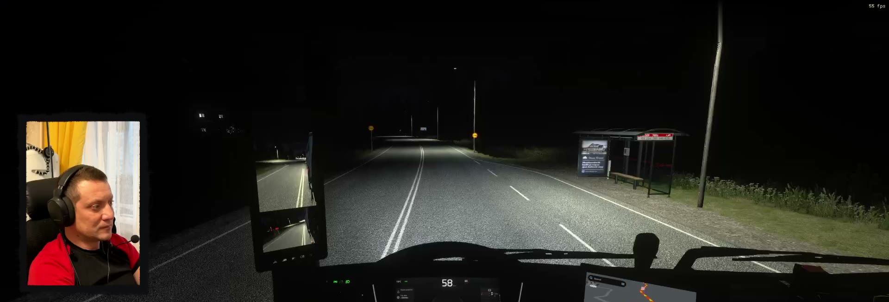

Рация «Канал 15» для ETS2
Выдуманные друзья-дальнобойщики в кабине. Не мод — файлы игры не трогает. Работает офлайн, ставится за пару минут.
⬇ Скачать «Канал 15» (Windows, бесплатно)
Как установить
- Скачал — кнопка выше, файл Kanal15-Setup.exe.
- Запустил — обычный установщик: далее, далее, готово.
- Windows ругнулся? Это SmartScreen: кнопка «Подробнее» → «Всё равно запустить». Установщик не подписан дорогим сертификатом — не потому что в нём вирус, а потому что проект делает один человек в гараже, а не корпорация. Исходники открыты, можно проверить.
Так это выглядит

Эфир прямо в кабине — водители сами заводят разговор и не молчат всю дорогу.

Заправка на закате. Голоса живут у тебя на компьютере — интернет не нужен, всё офлайн.

Ночное плечо. Говоришь в микрофон при нажатой тангенте — отвечают по характеру.
Где нас найти
💬 Telegram-канал — новости, голоса водителей, анонсы стримов.
▶ YouTube — стримы и шортсы из эфира.
🔵 ВКонтакте — зеркало новостей и роликов.
📷 Instagram — шортсы и закулисье.
☕ Boosty — поддержать проект: закулисье разработки и камео в эфире.
Пишу это один, глазами не всё вижу — если установщик капризничает, напишите в Telegram, починим.